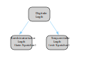
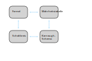

Dieser Kurs über digitale Logik ist in zwei große Abschnitte aufgeteilt:
-
Kombinatorische Schaltungen (ohne Speicherelemente)
-
Sequentielle Schaltungen (mit Speicherelementen)

Während kombinatorische Schaltungen aus booleschen Gattern bestehen, die ohne Rückkopplungsfunktion miteinander verbunden sind, besitzen sequentielle Gatter eine Speicherfunktion, die es ihnen ermöglicht, in einen anderen Zustand überzugehen.
Eine kombinatorische Schaltung kann einen n - weiten Vektor von Eingängen und einen m - weiten Vektor von Ausgängen haben.
Kombinatorische Schaltungen können auf verschiedene Weise beschrieben werden: Als Formel, als Schaltkreis, als Wahrheitstabelle oder als Karnaugh-Map. Alle diese Beschreibungen sind ineinander überführbar.

Beginnen wir also mit den grundlegenden logischen Gattern und der booleschen Algebra im nächsten Beitrag.
Aus dem englischen übersetzt mit DeepL.com